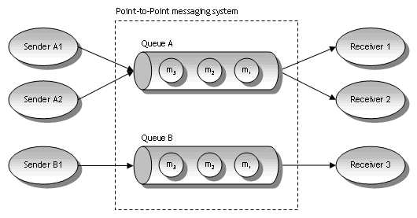
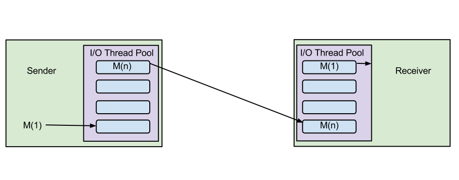
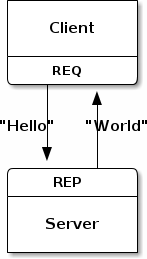
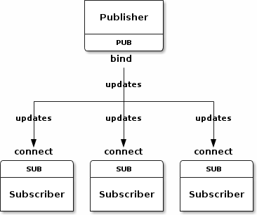

Distributed Services with ØMQ
Message Systems and Queues
Message queues are software-engineering components used for interprocess communication, or for inter-thread communication within the same process
Message queues facilitate asynchronous and fault tolerant communication

Brokers
Brokers run as an independent process and provide a single point for communication
ØMQ is Brokerless
Every ØMQ socket has it's own queue and there is no central authority

Wtf is ØMQ then?
ZeroMQ is a high-performance asynchronous messaging library aimed at use in scalable distributed or concurrent applications

Simple Request/Response

Non-Blocking: req_non_blocking.rb
Publish and Subscribe

Weather Server: server.rb
Weather Subscriber: client.rb
Divide and Conquer: ventilator.rb
Divide and Conquer: worker.rb
Divide and Conquer: sink.rb
Other Imprtant Concepts
XREP and XREQ sockets
Pollers
Devices
←
→
/
#